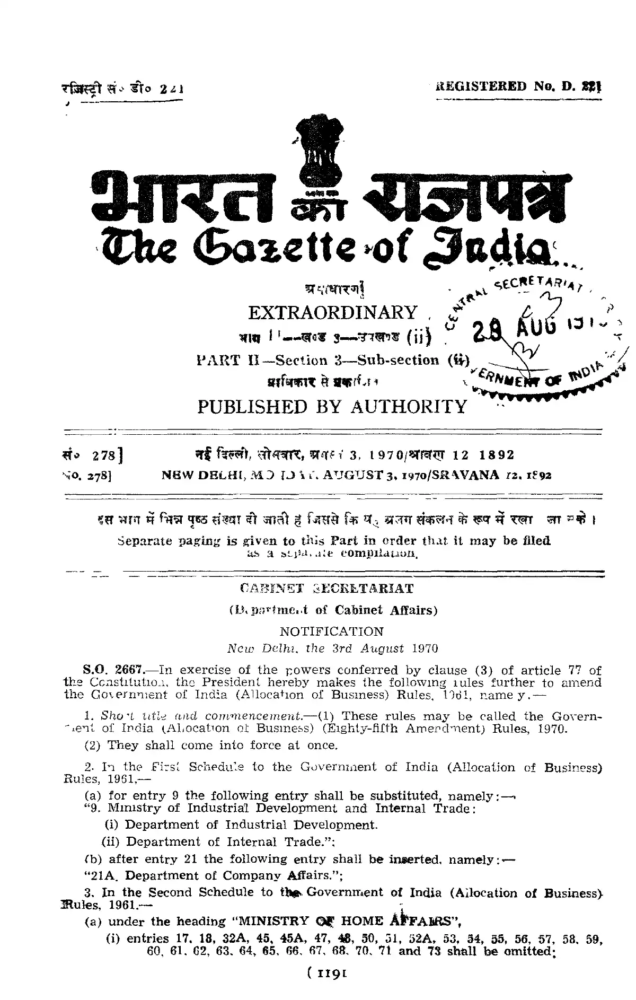
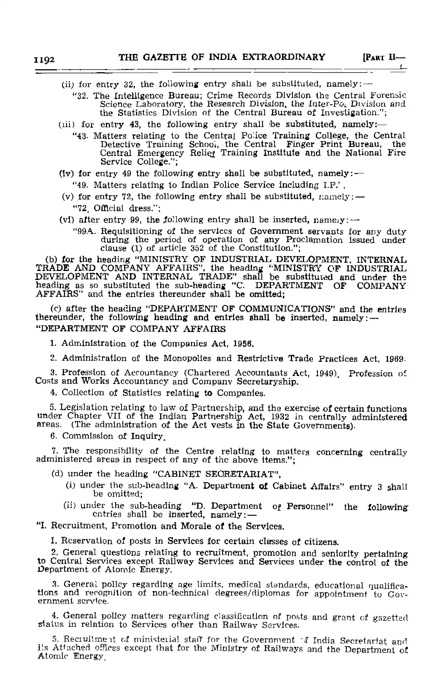
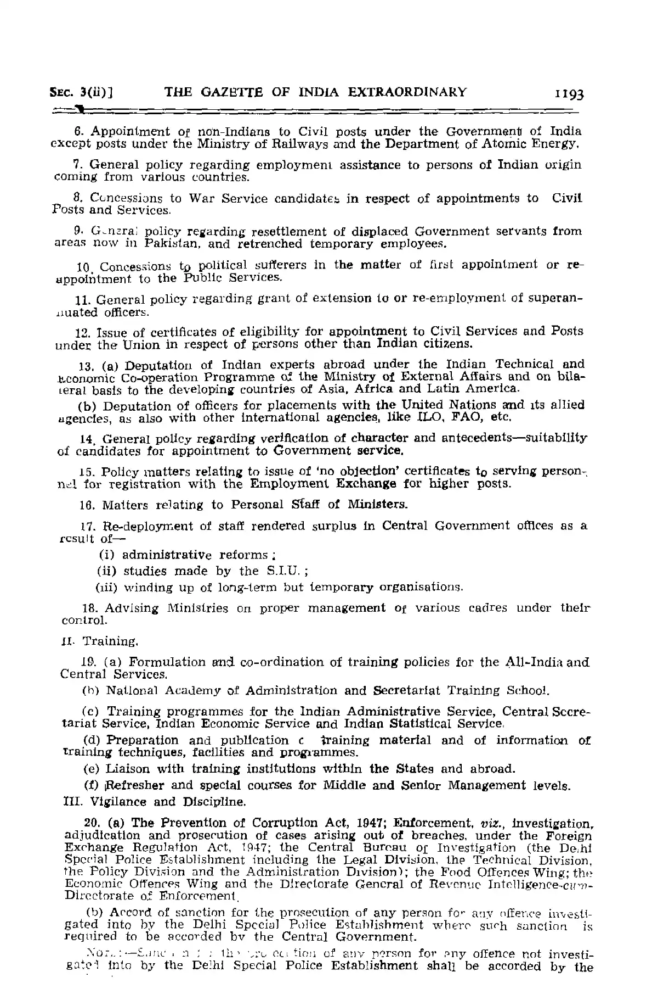
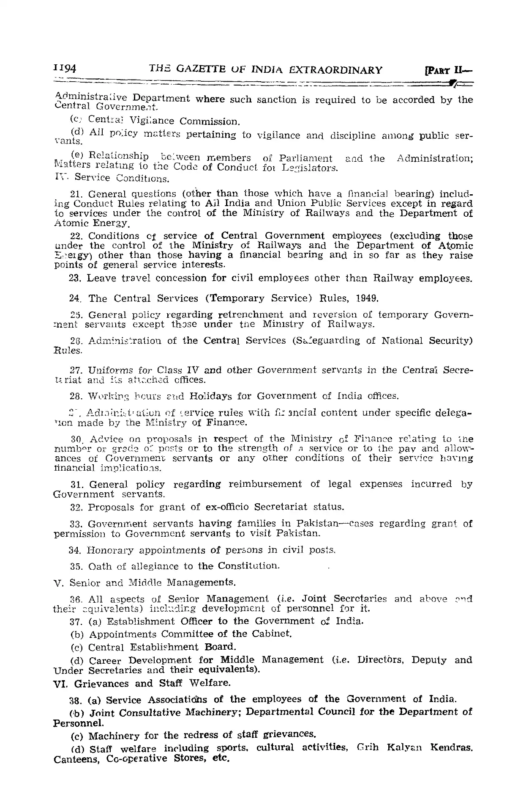
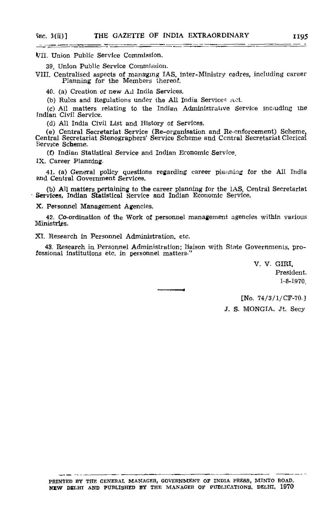

Amendment #85 (S.O. 2667, 1970)
13 changes: 2 to the First Schedule, 11 to the Second Schedule. 12 applied1 not applied
What it did to the ministries
- spun offDepartment of Company Affairs is separated from Ministry of Industrial Development, Internal Trade and Company Affairs (7 subjects) change 1, 2, 9, 10, 11 · histories: Industry, Company Affairs
- renamedMinistry of Industrial Development, Internal Trade and Company Affairs is renamed Ministry of Industrial Development and Internal Trade change 1, 9, 10 · histories: Industry
- grewCabinet Secretariat grows from 8 to 50 subjects change 12, 13 · histories: Cabinet Secretariat
The order, page by page
Page 1 of 6

123Schedule 1 › entry 9
- 9. Ministry of Industrial Development and Internal Trade:
- i. Department of Industrial Development.
- ii. Department of Internal Trade.
applied at schedule 1 › ministry 9 in the Rules after #85
read hindi missing
after Schedule 1 › entry 21
- 21A. Department of Company Affairs.
applied at schedule 1 › department 21A in the Rules after #85
read hindi missing
Schedule 2 › MINISTRY OF HOME AFFAIRS › entry 17; Schedule 2 › MINISTRY OF HOME AFFAIRS › entry 18; Schedule 2 › MINISTRY OF HOME AFFAIRS › entry 32A; Schedule 2 › MINISTRY OF HOME AFFAIRS › entry 45; Schedule 2 › MINISTRY OF HOME AFFAIRS › entry 45A; Schedule 2 › MINISTRY OF HOME AFFAIRS › entry 47; Schedule 2 › MINISTRY OF HOME AFFAIRS › entry 48; Schedule 2 › MINISTRY OF HOME AFFAIRS › entry 50; Schedule 2 › MINISTRY OF HOME AFFAIRS › entry 51; Schedule 2 › MINISTRY OF HOME AFFAIRS › entry 52A; Schedule 2 › MINISTRY OF HOME AFFAIRS › entry 53; Schedule 2 › MINISTRY OF HOME AFFAIRS › entry 54; Schedule 2 › MINISTRY OF HOME AFFAIRS › entry 55; Schedule 2 › MINISTRY OF HOME AFFAIRS › entry 56; Schedule 2 › MINISTRY OF HOME AFFAIRS › entry 57; Schedule 2 › MINISTRY OF HOME AFFAIRS › entry 58; Schedule 2 › MINISTRY OF HOME AFFAIRS › entry 59; Schedule 2 › MINISTRY OF HOME AFFAIRS › entry 60; Schedule 2 › MINISTRY OF HOME AFFAIRS › entry 61; Schedule 2 › MINISTRY OF HOME AFFAIRS › entry 62; Schedule 2 › MINISTRY OF HOME AFFAIRS › entry 63; Schedule 2 › MINISTRY OF HOME AFFAIRS › entry 64; Schedule 2 › MINISTRY OF HOME AFFAIRS › entry 65; Schedule 2 › MINISTRY OF HOME AFFAIRS › entry 66; Schedule 2 › MINISTRY OF HOME AFFAIRS › entry 67; Schedule 2 › MINISTRY OF HOME AFFAIRS › entry 68; Schedule 2 › MINISTRY OF HOME AFFAIRS › entry 70; Schedule 2 › MINISTRY OF HOME AFFAIRS › entry 71; Schedule 2 › MINISTRY OF HOME AFFAIRS › entry 73
not applied (the change could not be placed in the Rules as read; see How this document was read)
Page 2 of 6

45678910111213Schedule 2 › MINISTRY OF HOME AFFAIRS › entry 32
- 32. The Intelligence Bureau; Crime Records Division the Central Forensic Science Laboratory, the Research Division, the Inter-Po Division and the Statistics Division of the Central Bureau of Investigation.
applied at schedule 2 › ministry MINISTRY OF HOME AFFAIRS › part I › group_heading The following subjects which are relatable to… in the Rules after #85
Schedule 2 › MINISTRY OF HOME AFFAIRS › entry 43
- 43. Matters relating to the Central Police Training College, the Central Detective Training Schooi, the Central Finger Print Bureau, the Central Emergency Relief Training Institute and the National Fire Service College.
applied at schedule 2 › ministry MINISTRY OF HOME AFFAIRS › part I › group_heading The following subjects which are relatable to… in the Rules after #85
Schedule 2 › MINISTRY OF HOME AFFAIRS › entry 49
- 49. Matters relating to Indian Police Service including I.P.
applied at schedule 2 › ministry MINISTRY OF HOME AFFAIRS › part I › group_heading The following subjects which are relatable to… in the Rules after #85
Schedule 2 › MINISTRY OF HOME AFFAIRS › entry 72
- 72. Official dress.
applied at schedule 2 › ministry MINISTRY OF HOME AFFAIRS › part I › group_heading The following subjects which are relatable to… in the Rules after #85
after Schedule 2 › MINISTRY OF HOME AFFAIRS › entry 99
- 99A. Requisitioning of the services of Government servants for any duty during the period of operation of any Proclamation issued under clause (1) of article 352 of the Constitution.
applied at schedule 2 › ministry MINISTRY OF HOME AFFAIRS › part I › group_heading The following subjects which are relatable to… in the Rules after #85
Schedule 2 › MINISTRY OF INDUSTRIAL DEVELOPMENT, INTERNAL TRADE AND COMPANY AFFAIRS
- MINISTRY OF INDUSTRIAL DEVELOPMENT AND INTERNAL TRADE
applied at schedule 2 › ministry MINISTRY OF INDUSTRIAL DEVELOPMENT AND INTERNAL TRADE in the Rules after #85
read hindi missing, states inferred loose
Schedule 2 › MINISTRY OF INDUSTRIAL DEVELOPMENT AND INTERNAL TRADE › DEPARTMENT OF COMPANY AFFAIRS
applied at schedule 2 › ministry MINISTRY OF INDUSTRIAL DEVELOPMENT AND INTERNAL TRADE › department C in the Rules after #85
after Schedule 2 › DEPARTMENT OF COMMUNICATIONS
- DEPARTMENT OF COMPANY AFFAIRS
- 1. Administration of the Companies Act, 1956.
- 2. Administration of the Monopolies and Restrictive Trade Practices Act, 1969.
- 3. Profession of Accountancy (Chartered Accountants Act, 1949). Profession of Costs and Works Accountancy and Company Secretaryship.
- 4. Collection of Statistics relating to Companies.
- 5. Legislation relating to law of Partnership, and the exercise of certain functions under Chapter VII of the Indian Partnership Act, 1932 in centrally administered areas. (The administration of the Act vests in the State Governments).
and 2 more
- 6. Commission of Inquiry.
- 7. The responsibility of the Centre relating to matters concerning centrally administered areas in respect of any of the above items.
applied at schedule 2 › department DEPARTMENT OF COMPANY AFFAIRS in the Rules after #85
read hindi missing
Schedule 2 › CABINET SECRETARIAT › Department of Cabinet Affairs › entry 3
applied at schedule 2 › ministry CABINET SECRETARIAT › department A › entry 3 in the Rules after #85
after Schedule 2 › CABINET SECRETARIAT › Department of Personnel
- I. Recruitment, Promotion and Morale of the Services.
- 1. Reservation of posts in Services for certain classes of citizens.
- 2. General questions relating to recruitment, promotion and seniority pertaining to Central Services except Railway Services and Services under the control of the Department of Atomic Energy.
- 3. General polley regarding age limits, medical standards, educational qualifications and recognition of non-technical degrees/diplomas for appointment to Government service.
- 4. General pollcy matters regarding classification of posts and grant of gazetted status in relation to Services other than Railway Services.
- 5. Recruitment of ministerial staff for the Government f India Secretariat and its Attached offices except that for the Ministry of Railways and the Department of Atomic Energy. SEC. 3(H)] THE GAZETTE OF INDIA EXTRAORDINARY 1193
and 80 more
- 6. Appointment of non-Indians to Civil posts under the Government of India except posts under the Ministry of Railways and the Department of Atomic Energy.
- 7. General policy regarding employment assistance to persons of Indian origin coming from various countries.
- 8. Concessions to War Service candidates in respect of appointments to Civil Posts and Services.
- 9. General policy regarding resettlement of displaced Government servants from areas now in Pakistan, and retrenched temporary employees.
- 10. Concessions to political sufferers in the matter of first appointment or reappointment to the Public Services.
- 11. General policy regarding grant of extension to or re-employment of superannuated officers.
- 12. Issue of certificates of eligibility for appointment to Civil Services and Posts under the Union in respect of persons other than Indian citizens.
- 13.
- a. Deputation of Indian experts abroad under the Indian Technical and Economic Co-operation Programme of the Ministry of External Affairs and on bilateral basis to the developing countries of Asia, Africa and Latin America.
- b. Deputation of officers for placements with the United Nations and its allied agencies, as also with other international agencies, like ILO, FAO, etc.
- 14. General policy regarding verification of character and antecedents-suitability of candidates for appointment to Government service.
- 15. Policy matters relating to issue of 'no objection' certificates to serving personnel for registration with the Employment Exchange for higher posts.
- 16. Matters relating to Personal Staff of Ministers.
- 17. Re-deployment of staff rendered surplus in Central Government offices as a result of
- i. administrative reforms:
- ii. studies made by the S.I.U.
- iii. winding up of long-term but temporary organisations.
- 18. Advising Ministries on proper management of various cadres under their control.
- II. Training.
- 18.
- a. Formulation and co-ordination of training policies for the All-India and Central Services.
- b. National Academy of Administration and Secretariat Training School.
- c. Training programmes for the Indian Administrative Service, Central Scoretariat Service, Indian Economic Service and Indian Statistical Service.
- d. Preparation and publication c training material and of information of Training techniques, facilities and programmes.
- e. Liaison with training institutions within the States and abroad.
- f. Refresher and special courses for Middle and Senior Management levels.
- III. Vigilance and Discipline.
- 20.
- a. The Prevention of Corruption Act, 1947; Enforcement, viz., investigation adjudication and prosecution of cases arising out of breaches, under the Foreign Exchange Regulation Act, 1947; the Central Bureau of Investigation (the De.hl Special Police Establishment including the Legal Division, the…
- b. Accord of sanction for the prosecution of any person for any offence investigated into by the Delhi Special Police Establishment where such sanction is required to be accorded by the Central Government. No-Sannath rection of any person for any offence not investigate into by the Delhi Special…
- c. Central Vigilance Commission.
- d. All policy matters pertaining to vigilance and discipline among public servants.
- e. Relationship between members of Parliament and the Administration Matters relating to the Code of Conduct for Legislators.
- IV. Service Conditions.
- 21. General questions (other than those which have a ſinancial bearing) including Conduct Rules relating to All India and Union Public Services except in regard to services under the control of the Ministry of Railways and the Department of Atomic Energy.
- 22. Conditions of service of Central Government employees (excluding those under the control of the Ministry of Railways and the Department of Atomic Energy) other than those having a financial bearing and in so far as they raise points of general service interests.
- 23. Leave travel concession for civil employees other than Railway employees.
- 24. The Central Services (Temporary Service) Rules, 1949.
- 25. General policy regarding retrenchment and reversion of temporary Government servants except those under the Ministry of Railways.
- 26. Administration of the Central Services (Safeguarding of National Security) Rules.
- 27. Uniforms for Class IV and other Government servants in the Central Secretariat and its attached offices.
- 28. Working hours and Holidays for Government of India offices.
- 29. Administration of service rules with fiancial content under specific delegation made by the Ministry of Finance.
- 30. Advice on proposals in respect of the Ministry of Finance relating to the number or grade of posts or to the strength of a service or to the pay and allowances of Government servants or any other conditions of their service having financial implications.
- 31. General policy regarding reimbursement of legal expenses incurred by Government servants.
- 32. Proposals for grant of ex-officio Secretariat status.
- 33. Government servants having families in Pakistan-cases regarding grant of permission to Government servants to visit Pakistan.
- 34. Honorary appointments of persons in civil posts.
- 35. Oath of allegiance to the Constitution.
- V. Senior and Middle Managements.
- 36. All aspects of Senior Management (i.e. Joint Secretaries and above and their equivalents) including development of personnel for it.
- 37.
- a. Establishment Officer to the Government of India.
- b. Appointments Committee of the Cabinet.
- c. Central Establishment Board.
- d. Career Development for Middle Management (i.e. Directors, Deputy and Under Secretaries and their equivalents).
- VI. Grievances and Staff Welfare.
- 38.
- a. Service Associations of the employees of the Government of India.
- b. Joint Consultative Machinery; Departmental Council for the Department of Personnel.
- c. Machinery for the redress of staff grievances.
- d. Staff welfare including sports, cultural activities, Grih Kalyan Kendras. Canteens, Co-operative Stores, etc. SEC. 3(H)]
- VII. Union Public Service Commission
- 39. Union Public Service Commission.
- VIII. Centralised aspects of managing IAS, inter-Ministry cadres, including career Planning for the Members thereof
- 40.
- a. Creation of new All India Services.
- b. Rules and Regulations under the All India Services act.
- c. All matters relating to the Indian Administrative Service including the Indian Civil Service.
- d. All India Civil List and History of Services.
- e. Central Secretariat Service (Re-organisation and Re-enforcement) Scheme Central Secretariat Stenographers' Service Scheme and Central Secretariat Clerical Service Scheme.
- f. Indian Statistical Service and Indian Economic Service.
- IX. Career Planning.
- 41.
- a. General policy questions regarding career planning for the All India and Central Government Services.
- b. All matters pertaining to the career planning for the IAS, Central Secretariat Services, Indian Statistical Service and Indian Economic Service
- X. Personnel Management Agencies.
- 42. Co-ordination of the Work of personnel management agencies within various Ministries.
- XI. Research in Personnel Administration, etc.
- 43. Research in Personnel Administration; liaison with State Governments, professional institutions etc. in personnel matters.
applied at schedule 2 › ministry CABINET SECRETARIAT › department D in the Rules after #85
read page break
Page 3 of 6

Page 4 of 6

Page 5 of 6

Page 6 of 6
How this document was read
Edits to the reading
| Date | By | Edit | Before → after |
|---|---|---|---|
| 14 November 2026 | mukundesh | word corrected |
Changes placed by an inference rule
| Change | Rule | Status | What |
|---|---|---|---|
| 9 | loose | accepted | change 9: ministry MINISTRY OF INDUSTRIAL DEVELOPMENT, INTERNAL TRADE AND COMPANY AFFAIRS taken for ministry Ministry of Industrial Development, Internal Trade and Company Affairs shall be… |
Known issues
| Change | Issue | Known as |
|---|---|---|
| 3 | change 3: no entry 45A under schedule 2 › ministry MINISTRY OF HOME AFFAIRS | Home Affairs' structure |
From the Government of India (Allocation of Business) Rules, 1961 and their amendments, as published by the Cabinet Secretariat (cabsec.gov.in), read by orgpedia. The readings of the older scanned gazettes have known gaps.